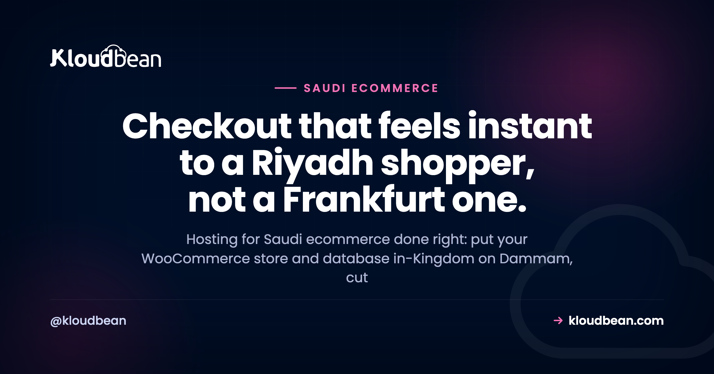

Hosting for Saudi Ecommerce: What Your Online Store Actually Needs

Hosting for Saudi ecommerce comes down to a question your theme can't answer: how far is your checkout from your buyer? If you run a WooCommerce store selling into Riyadh, Jeddah, or Dammam, the server's location decides how fast add-to-cart feels, where your customer data sits, and whether the site stays up when a White Friday sale lands. This is a buyer's guide to Saudi ecommerce hosting. What an online store in the Kingdom genuinely needs, and what's just noise.
A Saudi online store needs its server and database close to buyers, and its customer data in-Kingdom. In practice that's a managed WooCommerce stack in Google Cloud's Dammam region (me-central2), a managed MySQL or MariaDB database in the same region, object storage for product images, automatic backups, and free SSL. Add a load balancer before a big sale. Card data stays with a payment gateway, so your store's PCI scope stays small.
What does hosting for Saudi ecommerce need to get right?
A generic host will happily run your store from anywhere. That's the problem. An online store selling to Saudi buyers has five requirements a global template ignores, and they don't all carry the same weight. Sort them and the buying decision gets simple.
- Checkout latency. Every tap on a Saudi phone is a round trip to your server. Host far away and the cart feels laggy, which quietly costs you sales.
- Data location. Customer names, addresses, and order history are personal data on people in the Kingdom. Where those rows live matters under Saudi Arabia's PDPL.
- Peak reliability. Ramadan nights, White Friday, and the two Eids aren't gentle. Traffic arrives in waves, and that's exactly when a store must not fall over.
- Arabic and RTL. A serious Saudi storefront serves Arabic properly, right-to-left, with the checkout in the buyer's language.
- PCI scope. The moment you take card payments, PCI DSS is in play. Smart stores keep their scope tiny by never touching raw card numbers.
Notice what's missing from that list. Theme, page builder, the exact plugin count. Those matter for conversion, sure, but they're not hosting decisions. So before comparing prices, look at how a host handles the five above. Here's how a far-region generic plan stacks up against an in-Kingdom Dammam stack for a Saudi store.
| Concern | Far-region generic host | In-Kingdom Dammam stack |
|---|---|---|
| Checkout latency | Every request crosses continents; carts and checkout feel slow | Short hop to Riyadh and Jeddah; dynamic pages feel quick |
| Customer data | Sits in Europe or the US, off Saudi soil | Database and backups stay in the Kingdom |
| Sale-day peaks | One box, no clear scaling path | Resize the server, add a load balancer and app pool |
| Product media | Bloats the server disk, slows backups | Offloaded to object storage, cached at the edge |
| PCI scope | Often unclear where card data flows | Segmented network, TLS, card capture at the gateway |
Checkout latency is the conversion lever most stores ignore
I'll say the unpopular part first. Most Saudi stores lose more revenue to a far-region checkout than to any theme tweak, any hero image, any A/B test on button color. The reason is physics, and physics doesn't care how good your CRO is.
Every page on a WooCommerce store is a stack of round trips. The browser asks for the HTML, then for the cart fragment, then the checkout fires AJAX calls to update totals, shipping, and payment methods as the shopper types. Host in Frankfurt and a Riyadh buyer's request travels roughly 4,000 km each way. That's a floor of tens of milliseconds per trip, often 90 to 130 ms in practice, and it's the speed of light through glass, not a server you can upgrade away. Stack a dozen calls behind one checkout and the delay compounds into lag the shopper feels. Move that store to Dammam and the same clicks happen across the region instead of across a continent. The distance tax mostly disappears.
Here's the trap I see most often. A store owner installs a page-cache plugin, the homepage loads fast, and everyone declares victory. But the cache never touches the cart or the checkout. Those pages are dynamic and per-user by definition, so they hit your origin server every single time. A CDN can serve your logo from Jeddah, and it should. It cannot serve a logged-in cart from Jeddah. That's why fast checkout in Saudi Arabia is an origin-location problem, and the fix is putting the origin in-Kingdom. The deeper version of this argument lives in low-latency hosting for Riyadh and Jeddah, and the pillar it sits under is cloud hosting in Saudi Arabia.
Where should your customer and payment data live?
A store collects real personal data. Names, phone numbers, delivery addresses, order history, sometimes national ID for certain flows. Saudi Arabia has a real law about that data: the Personal Data Protection Law, or PDPL, overseen by SDAIA. It governs how personal data on people in the Kingdom is collected, processed, and moved around. For a lot of Saudi stores, keeping that data in-Kingdom is either expected or the cleaner path to take.
This is where the region choice does real work. Kloudbean provisions across seven clouds (AWS, AWS Lightsail, Google Cloud, Linode, Vultr, DigitalOcean, and UpCloud), and the in-Kingdom option among them is Google Cloud's Dammam region, code-named me-central2, which sits physically inside Saudi Arabia. Launch your server there and your managed database launches beside it, in the same region, on a private network. Backups land in-region too. So your customers' rows, and every copy of them, stay on Saudi soil.
One honest boundary. Hosting in Dammam settles the location question, but it does not make you "PDPL compliant" on its own. Compliance is shared. The platform provides the infrastructure controls (in-Kingdom region, private networking, firewall, patched servers, restorable backups). You still own the app-level parts: lawful basis, consent, retention, and how you answer a data-subject request. Kloudbean doesn't hand you a compliance certificate, and you should distrust any host that says it does. What you get is the piece that's genuinely painful to fix later: your data, provably, inside the Kingdom.
The stack a Saudi store should run
Before the setup steps, picture the whole thing. A shopper's normal traffic and a sale-day spike both arrive at a load balancer, which spreads them across a pool of app servers. Those app servers all talk to one managed database, and product images live in object storage, not on the app disk. Every part sits inside the Dammam region.
Surviving the peaks: Ramadan, White Friday, and Eid
Saudi ecommerce is seasonal in a way that catches new stores off guard. Ramadan shifts buying into the late-night hours. White Friday, the region's answer to Black Friday, turns a single week in November into a large share of the year's orders. Then the two Eids bring their own surges. A store that runs fine in March can buckle on the busiest night of the year, and that's the worst possible time to go down.
Now the honest engineering answer, because there's a myth to clear up. A normal Kloudbean store does not magically autoscale itself. Autoscaling and Kubernetes are enterprise and custom setups, not something that quietly kicks in on a $12 plan. And most stores don't need them anyway. What a store needs for a sale is a plan you switch on ahead of time.
- Resize the server before the sale. Bump CPU and RAM for the peak week, then bring it back down after. You control the timing.
- Put a Flexible Load Balancer in front. The FLB is built into every account, off by default, ready when you need it. Enable it, add a second or third app server to the pool, and traffic spreads across them instead of hammering one box.
- Keep one managed database as the source of truth. The app servers scale out, the database stays central. Give it enough headroom, because under a sale the DB is usually the real bottleneck, not the web tier.
- Add a managed Redis object cache. WooCommerce leans hard on the database for sessions and transients. A managed Redis instance (one of Kloudbean's seven database engines) takes that load off MySQL and keeps carts snappy under pressure.
That's the grown-up version of scaling for a sale. Plan the peak, spread the load, protect the database. When the week ends, scale back down and stop paying for capacity you don't need.

Product images, media, and page speed
Ecommerce is image-heavy. Every product has a gallery, and those files pile up fast. Stored on the app server's disk, they do two annoying things: they bloat your backups and they compete with PHP for the same machine. Under a sale, that's wasted capacity.
The fix is object storage. Kloudbean includes S3-compatible buckets, so product media lives in a bucket instead of on the app disk. Your WooCommerce uploads offload there, the server stays lean, and public images can be cached at the edge for shoppers anywhere. Because the buckets speak the standard S3 API, offload plugins that already support S3 work without special glue. Keep the product photos in the bucket, keep the app server for the app. That single split does more for backup speed and page weight than most speed plugins. If you want to squeeze WordPress itself, this guide to speeding up WordPress covers caching, images, and the database together.

Arabic and RTL: selling in your customer's language
A store aimed at Saudi buyers should feel native, and that means Arabic done properly: right-to-left layout, Arabic fonts that render cleanly, and a checkout that reads naturally in the language your customer thinks in. WordPress and WooCommerce handle RTL well, and they run on managed Linux servers in the Dammam region like any other stack. Free auto-renewing SSL, automatic backups, and the managed database all sit in the same region. If you're setting up a bilingual or Arabic-first storefront, the specifics are in Arabic WordPress hosting, and the broader platform sits in managed WordPress hosting.
PCI scope: keep card data off your server
Taking payments online means PCI DSS applies. The good news is that you get a big say in how much of it applies to you, and the answer should be "as little as possible." The way you shrink that scope is simple: never let raw card numbers touch your server.
In practice, you hand the card step to a payment gateway. A hosted checkout or a tokenizing gateway (options common in the Kingdom include HyperPay, Moyasar, PayTabs, and Tap, typically supporting mada, Apple Pay, and international cards) captures the card on their PCI-audited systems, then returns a token to your store. Your WooCommerce site sees an order and a token. It never sees, stores, or transmits a primary account number. That keeps your store in the smallest, simplest PCI bracket instead of the heavyweight one.
Where does the host fit? Kloudbean provides the infrastructure side: a segmented private network so your database isn't exposed, a Shorewall firewall with Fail2ban, free TLS so traffic is encrypted, and patched, maintained servers. That's real, and it's the part a store owner can't easily build alone. What it is not is a magic wand. No host can make your store PCI-compliant by itself, and Kloudbean makes no such claim on your behalf. Compliance is shared: strong infrastructure from the platform, correct handling from you and your gateway. Offload the card step, and the whole thing gets much smaller.
How to set up a Saudi ecommerce stack on Kloudbean
The hard decision (the region) is a single click, so the setup is short. Here's the path from empty account to a live, in-Kingdom WooCommerce store.
- Add a server in the Dammam region. Choose Google Cloud, then the Dammam (me-central2), Saudi Arabia region. Size it for your catalog and normal traffic; you can resize before a sale. This one choice pins your residency and your latency floor.
- Launch a managed database in the same region. Create a managed MySQL or MariaDB instance for WooCommerce. It provisions on the private network beside your app and is backed up automatically, all in-Kingdom. The step-by-step, including connection strings, is in how to add a managed database to your app.
- Deploy WordPress and WooCommerce, turn on free SSL. Point your domain at the server, issue an auto-renewing certificate, and you're serving HTTPS with no manual renewals to forget.
- Add object storage for product media. Create a bucket and offload your uploads so the app server stays lean.
- Connect a payment gateway. Wire up your chosen gateway so card capture happens on their systems, keeping your PCI scope small.
- Before a big sale, resize and enable the load balancer. Bump the server, switch on the FLB, add app servers to the pool, and confirm the database has headroom.


Who needs this (and who can keep it simple)
Not every store needs the full stack on day one, and I'd rather you spend where it counts. A quick, honest read.
- You sell mostly to Saudi buyers. Then in-Kingdom is the whole game. Checkout speed and data location both point to Dammam, and the setup above is worth doing from the start.
- You run seasonal sales. If White Friday or Ramadan is a meaningful chunk of revenue, plan the load balancer and resize path now, not at 11pm on sale night.
- You're bidding for or serving enterprise and government buyers. Residency often moves from nice-to-have to requirement. A clear "our store and its data sit in the Dammam region, inside Saudi Arabia" answer helps.
- You're a small store with global buyers and light traffic. You can start simpler. In-Kingdom is then a latency tiebreaker, not a must, though it still helps your Saudi shoppers.
My take after watching a lot of these builds: online store hosting in KSA isn't about chasing an exotic setup. Get the origin in-Kingdom, put the database and media where they belong, and have a sale-day plan. That covers what actually moves the needle. If you're weighing managed hosts for the region, this look at Cloudways alternatives is a fair sanity check on features and pricing.
Give your Saudi shoppers a checkout that feels instant.
Launch a managed WooCommerce server and database in Google Cloud's Dammam region (me-central2), offload media to object storage, keep backups and SSL in-Kingdom, and switch on a load balancer before your next big sale. All from one dashboard. Plans start from $8/mo, Enterprise is custom. Start at kloudbean.com, see options on pricing.
In-Kingdom Dammam region · Managed MySQL & MariaDB · Object storage · Built-in load balancer · Automatic backups · Free SSL · Free migration assistance · Free trial
FAQ
What hosting does a Saudi online store need?
It needs its server and database close to buyers and its customer data in-Kingdom. In practice that means a managed WooCommerce stack in Google Cloud's Dammam region (me-central2), a managed MySQL or MariaDB database in the same region, object storage for product media, automatic backups, and free SSL. Add a load balancer before big sales, and keep card data with a payment gateway.
Where should my Saudi store's customer and payment data be stored?
Personal data on people in the Kingdom is best kept in-Kingdom, which you get by hosting in the Dammam region so the database and backups stay on Saudi soil. Raw card data should not sit on your server at all; a payment gateway captures and stores it on its own PCI-audited systems. That split keeps customer data local and card data out of your scope.
Does hosting in Dammam make my store PCI compliant?
No. Hosting in the Dammam region gives you infrastructure controls (a segmented private network, firewall, TLS, patched servers), but PCI compliance is shared responsibility. You shrink your own PCI scope by using a payment gateway so raw card numbers never touch your server. No host can make a store PCI-compliant on its own, and Kloudbean makes no such claim for you.
Will hosting in Saudi Arabia actually make WooCommerce checkout faster?
Yes, for Saudi shoppers. Checkout is dynamic and per-user, so it can't be cached by a CDN and must reach your origin server every time. Hosting far away adds a physical latency floor of tens of milliseconds per round trip, often 90 to 130 ms from Europe. Serving from Dammam drops that into the single digits or low tens for in-Kingdom buyers, which shoppers feel most on carts and checkouts.
How do I keep my store online during White Friday, Ramadan, and Eid?
Plan the peak ahead of time. Resize the server up for the sale week, enable the built-in Flexible Load Balancer, and add app servers to the pool so traffic spreads out. Keep one managed database with enough headroom, since it's usually the bottleneck, and add a managed Redis object cache to take load off it. Scale back down after the sale.
Can I run an Arabic, right-to-left WooCommerce store?
Yes. WordPress and WooCommerce support Arabic and right-to-left layouts, and they run on managed Linux servers in the Dammam region like any other stack. You get free SSL, automatic backups, and a managed database in the same region. Arabic fonts and RTL checkout render cleanly, so the store feels native to a Saudi buyer.
Should a WooCommerce store use MySQL or MariaDB?
Either works well, and both are available as managed engines. MySQL and MariaDB are highly compatible, so pick the one your team knows or your plugins recommend. What matters more is that the database sits in the same Dammam region as the app, on a private network, with automatic backups, and that it has enough resources for your peak traffic.
Where should I store product images and media?
In object storage, not on the app server's disk. Kloudbean includes S3-compatible buckets, so WooCommerce uploads can offload to a bucket using standard S3 plugins. That keeps the server and its backups lean, and public images can be cached at the edge. It's one of the highest-impact changes for backup speed and page weight on an image-heavy store.
How much does ecommerce hosting in Saudi Arabia cost?
Standard plans start from $8 a month, and Enterprise is custom pricing depending on scale and requirements. An in-Kingdom Dammam stack follows the same plan structure, and object storage, a load balancer, or a managed Redis cache are added as you need them. Always check current numbers on the pricing page, since cloud pricing and region choice can affect the underlying cost.
Can you migrate my existing WooCommerce store into the Dammam region?
Yes. Free migration assistance can move an existing store and its database into the Dammam region with minimal downtime, and a free trial lets you test the setup first. Because the whole stack is managed from one dashboard, once you're in-Kingdom your server, database, media, backups, and SSL all sit in the same region.